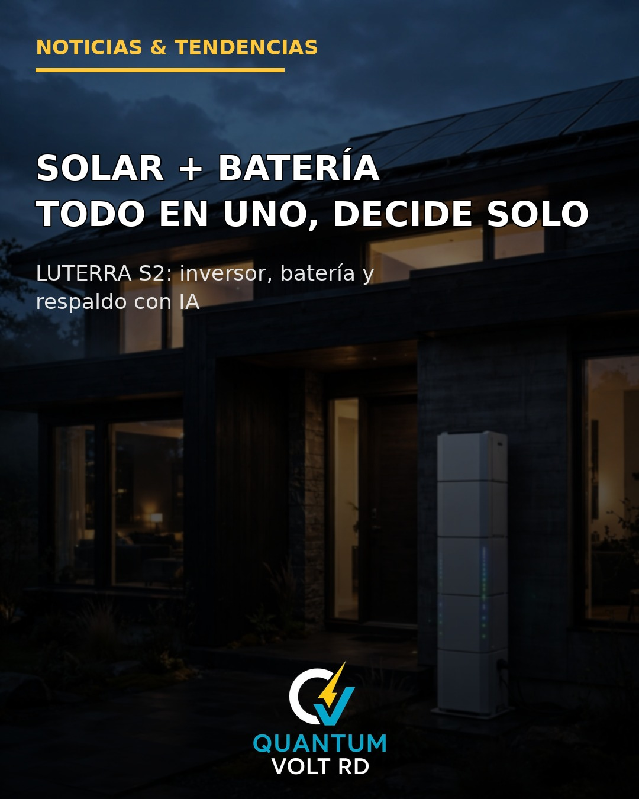

Noticia · 15 de noviembre de 2026
Huawei LUTERRA S2: solar + batería todo en uno, decide solo con IA
15 de noviembre de 2026 · Energía solar · Baterías

Huawei presentó esta semana su LUTERRA S2, un sistema residencial de energía «todo en uno»: inversor híbrido, batería modular y respaldo ante apagones en una torre apilable que se monta en menos de 5-10 minutos una vez preparadas las fijaciones. Sale a la venta en Europa en enero de 2027.
La novedad: la IA decide sola cuándo cargar y descargar
Lo nuevo no es solo que ocupa menos espacio: su plataforma usa inteligencia artificial con previsión meteorológica hora a hora, historial de consumo y previsión de precios de la electricidad para decidir sola cuándo cargar la batería y cuándo usarla, e incluso recomienda al usuario la mejor hora para poner la lavadora o cargar el vehículo eléctrico.
Para un hogar medio: 5 a 15 kWh, 99% de eficiencia, menos de 29 dB
Para un hogar medio bastan entre 5 y 15 kWh de almacenamiento modular, con hasta 99% de eficiencia de conversión y menos de 29 dB con refrigeración natural sin ventiladores: más silencioso que una conversación.
Qué significa para tu casa o negocio
Es exactamente lo que instalamos: en Quantum Volt RD te ponemos tu sistema solar con baterías y tu hogar inteligente, dimensionado para tu casa, para que el ahorro sea real y no solo una promesa. El LUTERRA S2 todavía no está a la venta en República Dominicana: se presenta como tendencia, lo que viene, no como un producto que instalamos hoy.
Cotiza tu sistema solar con baterías por WhatsApp: 829-778-9089Fuentes
- Energía Estratégica (11 de noviembre de 2026, actualizado 15 de noviembre de 2026): Huawei lanza LUTERRA S2 a la venta en Europa y un experto tecnológico explica las novedades que trae el nuevo sistema de almacenamiento residencial con inversores híbridos all-in-one
← Volver a la página principal de Quantum Volt RD · Ver todas las noticias →